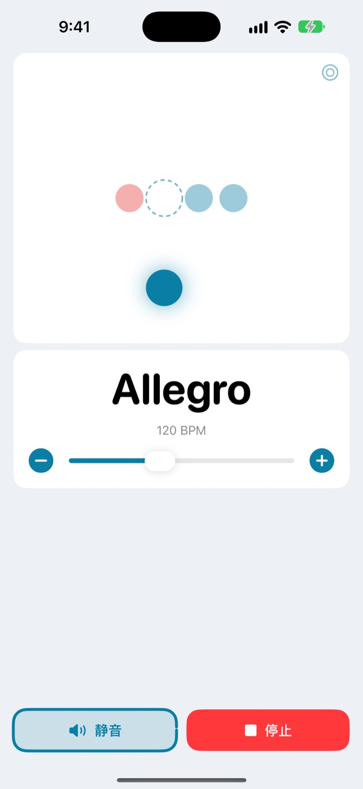
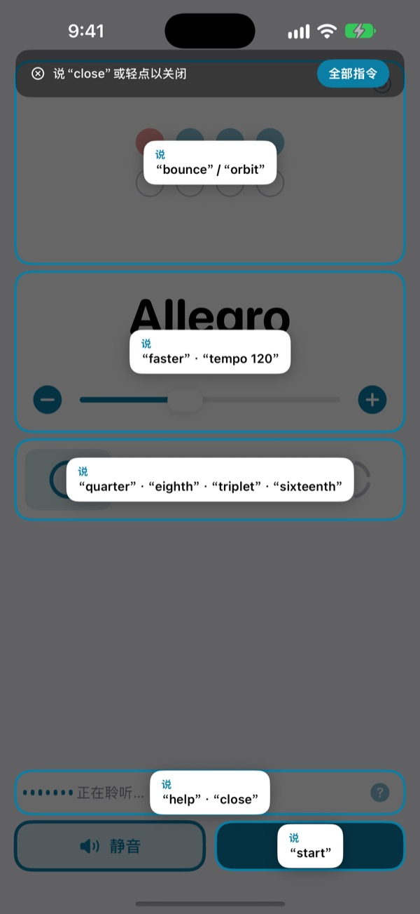
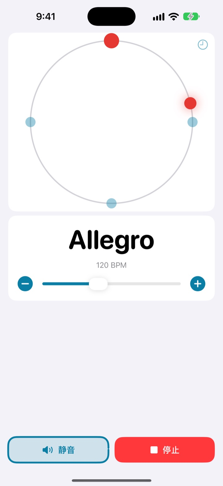
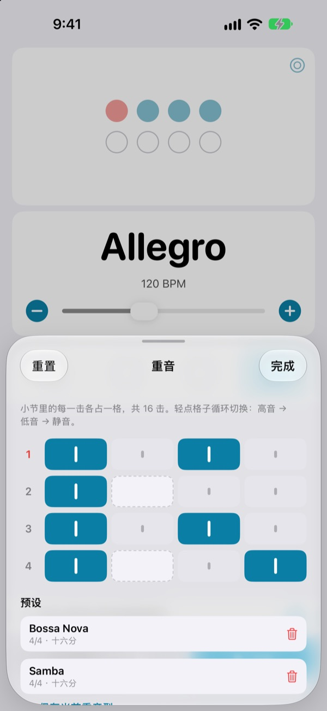

开口试试
点一下按钮，或者打开麦克风用英文说。会发出声音，请留意音量。
只想调一下速度，结果状态全没了？
放下琴弓，把拨片叼在嘴里，再点两下屏幕，刚找到的感觉就没了。Not My Tempo 让你保持演奏的姿势，一句话就能改速度。
说完马上跟上
用 start、faster、tempo 120 这样简短的英文单词来说。无需开启 iOS 语音控制或任何辅助功能设置，打开 App 就开始聆听。
忘了指令？说一声 help，所有能说的指令都会显示在屏幕上。

节拍也能用眼睛跟
弹跳、轨道、环形三种视图任选。每小节第一拍显示为红色，声音也更重。
在轨道视图里跟着节拍轻点，就能看出自己踩得有多准。

每首曲子的重音都能保存
小节里的每一击都可以设为高音、低音或静音，并按曲目存成预设。波萨诺瓦也好，桑巴也好，做一次，下次直接选就行。（Pro）

三步就能开始
- 1
打开 App
一打开就开始聆听。
- 2
允许使用麦克风
只在第一次询问麦克风和语音识别权限。
- 3
开口说或点一下
每条指令在屏幕上都有对应的按钮。
可以说的指令
- start · stop
- 开始、停止
- faster · slower
- 每次加快或放慢 5 BPM
- up · down
- 每次加快或放慢 1 BPM
- tempo 120
- 直接切到指定速度
- double · half
- 速度加倍、减半
- three beats
- 更改拍号
- quarter · eighth · triplet · sixteenth
- 四分、八分、三连音、十六分细分
- louder · quieter · mute
- 节拍声调大、调小、静音
- volume 60
- 按百分比设定音量
- bounce · orbit
- 切换节拍视图
- timer 5 minutes
- 设定练习计时器
- practice
- 练习时逐步提高速度（Pro）
- tune
- 打开调音器（Pro）
- help
- 显示所有指令
- close · done
- 关闭当前面板
语音识别使用美式英语，所以指令要用英文单词说，暂不支持中文指令。App 界面会以中文显示，每条指令也都能点按钮完成。
节拍器免费，想要更多再升级 Pro
免费
- 全部语音控制
- 1 到 8 拍，第一拍重音
- 四分、八分、三连音、十六分细分
- 弹跳、轨道、环形三种视图
- 敲击定速和准度检测
- 练习计时器
Not My Tempo Pro
- 练习模式：每隔几小节加几 BPM，一路提到目标速度
- 重音编辑器和按曲目保存的预设
- 半音阶调音器
含免费试用的年度订阅，或一次性买断永久使用
语音控制和辅助功能今后也永远对所有人免费。如果你在 Pro 推出前就买了这个 App，所有 Pro 功能已经可以直接使用。
常见问题
可以说中文吗？
语音识别使用美式英语，所以指令要说 start、faster 这样的英文单词。指令都是短词，很快就能上手，而且每条指令也都能用按钮完成。
它听不清我说的话。
先看看麦克风状态是否显示“正在聆听”。如果是关闭的，点一下“聆听”即可。环境嘈杂或用扬声器大声外放时，戴上耳机能让节拍声不漏进麦克风，识别会准确得多。
聆听自己关掉了。
为了省电，几分钟内没有指令就会停止聆听。点一下“聆听”就能重新打开。
速度被识别成了一半或两倍。
说 double 或 half 马上就能改过来。
调音器怎么用？
说 tune，或点速度卡片上的波形按钮。弹一个音，指示进入绿色区域就说明音准了。要退出时说 close。
我平时用 iOS 语音控制。
关闭本 App 的麦克风，改为说出按钮名称来操作即可。所有按钮都配有 VoiceOver 标签。
我的声音会被上传吗？
不会。语音在设备上完成识别，不会被录音、保存或上传。节拍器、语音控制和调音器在没有网络时也能使用。
怎么取消订阅？
在“设置 > Apple 账户 > 订阅”中取消。年度订阅会自动续订，除非在当前订阅期结束前至少 24 小时取消。永久版为一次性付费。
有任何问题或建议，请发邮件至 leeo@kakao.com。